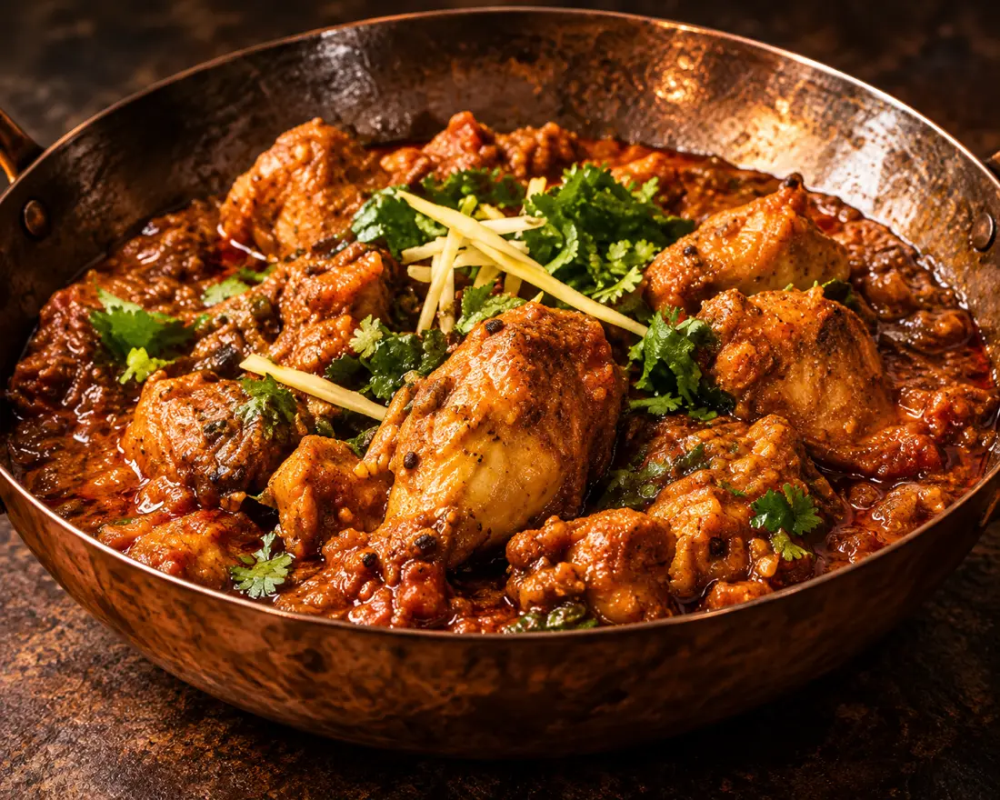
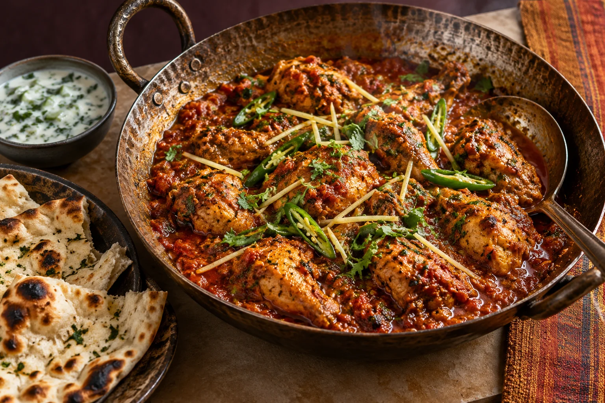
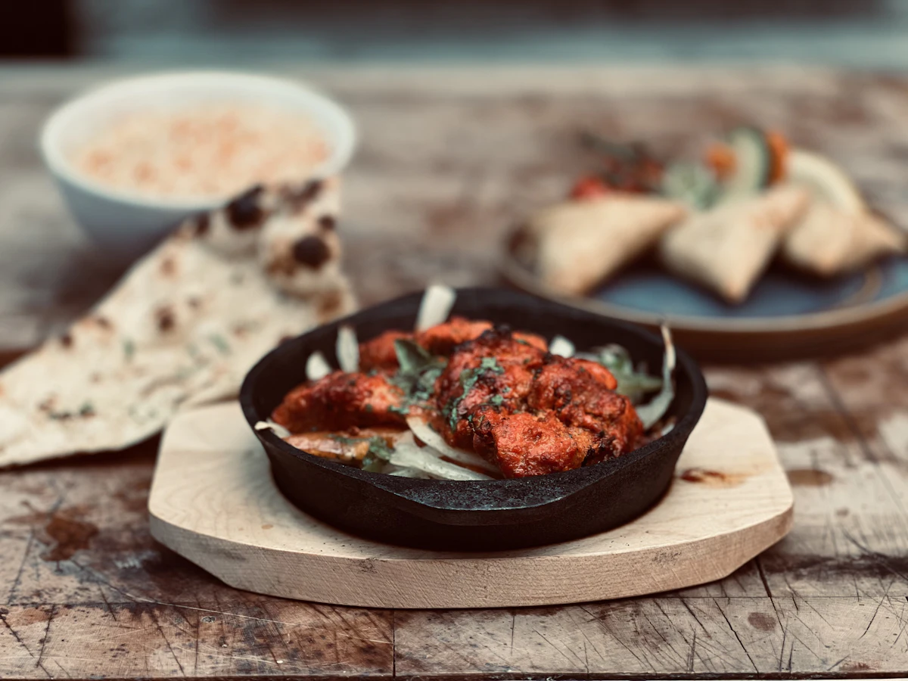
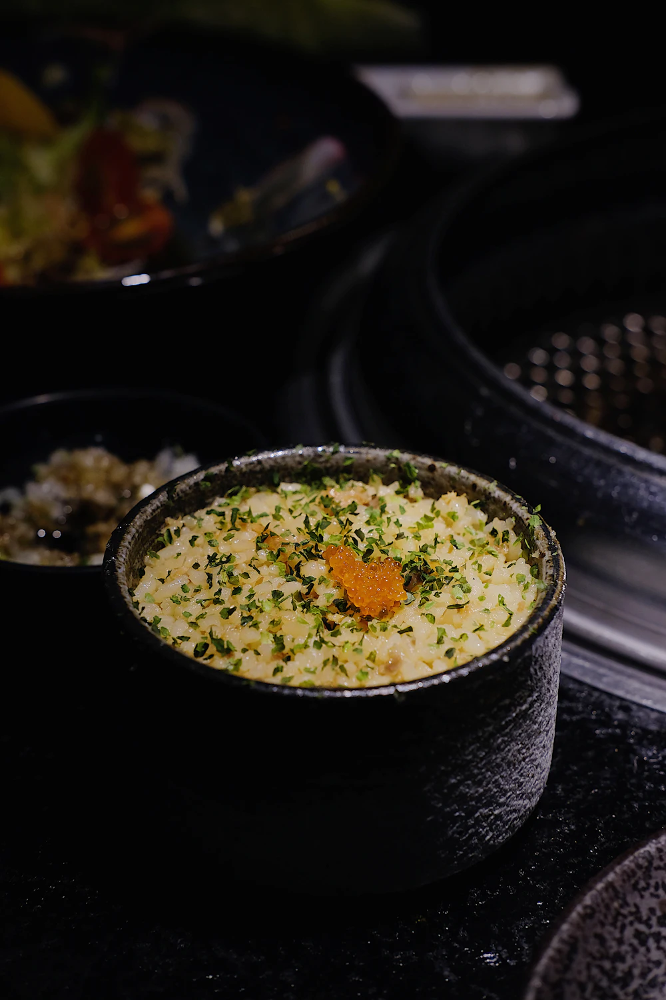
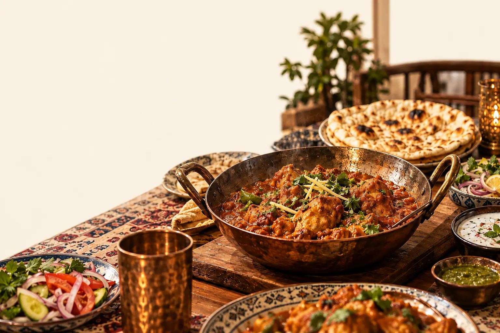
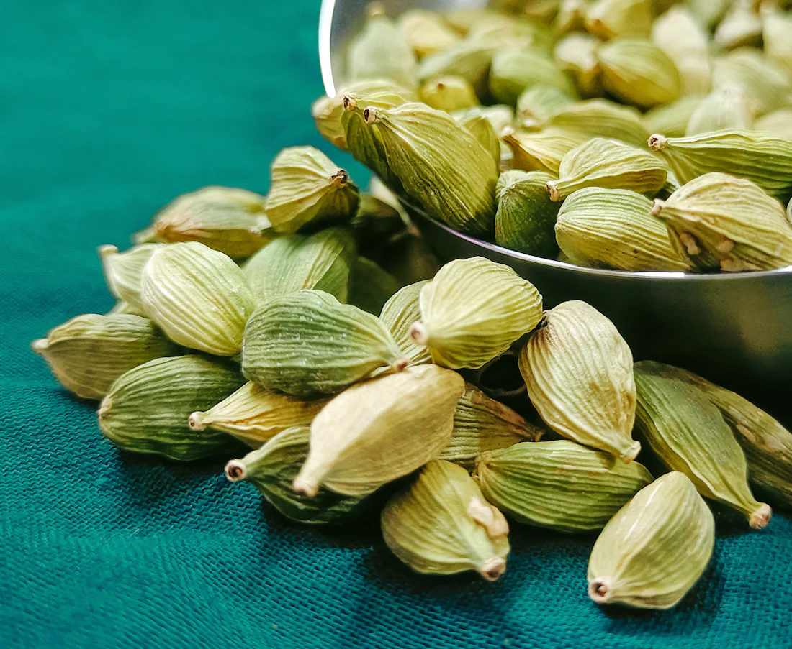
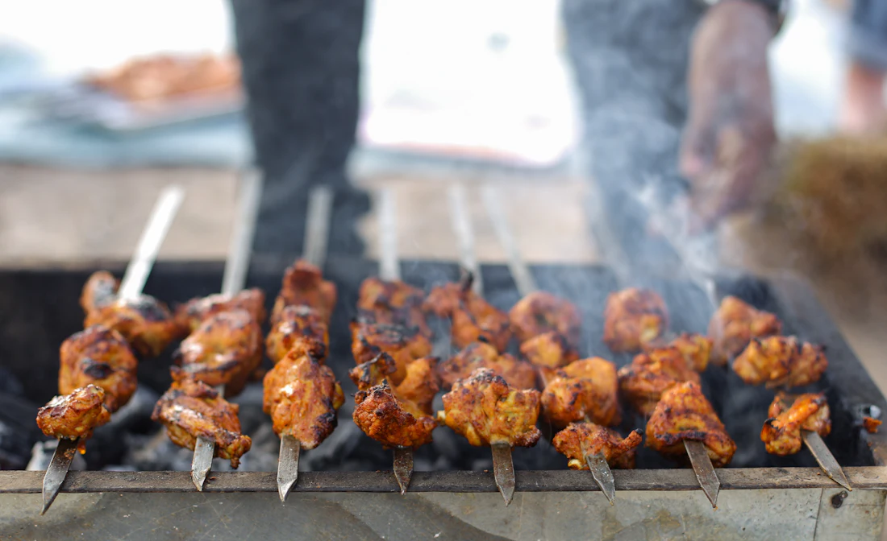
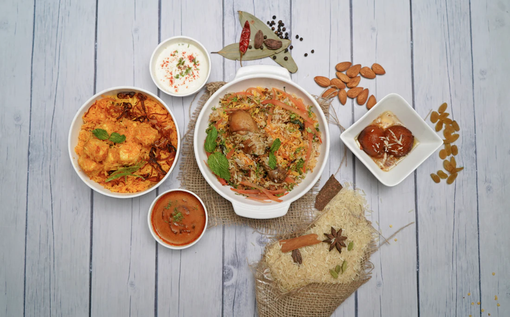
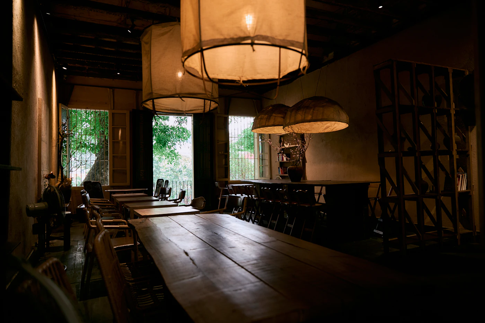

Chicken karahi
Rs. 1,450Bone-in chicken cooked with ripe tomatoes, green chillies and cracked black pepper. Finished with ginger and fresh coriander.
At the table: Share with two naan and a bowl of raita.

DASTARKHWANGather around something good
A karahi at the centre.
Warm naan within reach.
Always room for one more.
Rooted in Pakistani cooking.
Made for the ritual of sharing.



Four ways to order for a group, built from the menu. Each set is added as separate dishes, so you can change a portion or remove a plate afterwards.
A centrepiece with bread and rice.
Serves2 people
PriceRs. 2,230about Rs. 1,120 a person
Karahi in the middle, kebabs to pass.
Serves4 people
PriceRs. 6,240about Rs. 1,560 a person
The platter, a biryani and something sweet.
Serves4–5 people
PriceRs. 7,120about Rs. 1,420 a person
For birthdays, visiting family and long evenings.
Serves8 people
PriceRs. 14,820about Rs. 1,850 a person
Illustrative sets and prices. Per-person figures are rounded estimates; appetites vary.
A centrepiece, something from the charcoal, warm bread. Make it a meal that feels like yours.
A little something else?Add a dish or a table set and we’ll keep your order together here.
Find your first dishThe first piece of naan is torn, not counted. The karahi arrives in the middle, and the conversation takes its time. Dastarkhwan is our idea of Pakistani hospitality: food with depth, a generous table, and the pleasure of passing a plate.
Plan a gatheringAn independent demonstration brand. Examples are illustrative.

Tomato, ginger, green chilli, black pepper, coriander. Every dish on this menu names what goes into it, and recipe notes flag dairy, wheat and nuts, so you can ask about the rest before you order.

A karahi starts when the order arrives, which is why the sample collection estimate is 25 to 40 minutes. Grills are portioned in fours, so a table of two or four can share evenly.

Servings are given as people: half a kilo for two, a full kilo for four. Bread comes by the piece or by the basket, because someone always reaches for one more.

Sample details for this demonstration brand. Hours, address and phone are illustrative, not a real venue.
A half-kilo karahi is an example portion for two; a full kilo serves four. Add one or two naan per person. Appetites vary, so use the serving notes as a starting point.
Karahi, handi and the family platter offer mild, medium and hot choices. Other dishes show their sample recipe’s usual spice level.
Recipe notes identify some ingredients in this illustrative menu, not a verified allergen list. Kitchen handling, suppliers and dietary suitability have not been verified. Please discuss your needs with the restaurant before placing a real order.
This is an independent restaurant demo. You can customise dishes, build a basket and try checkout or a table enquiry. No money is charged, order sent or table reserved.
A family dinner, a celebration, or a question about the menu. Tell us what you have in mind.
Try a table enquiry with sample details. You can choose an example time and see a demo confirmation. No reservation or message is sent.